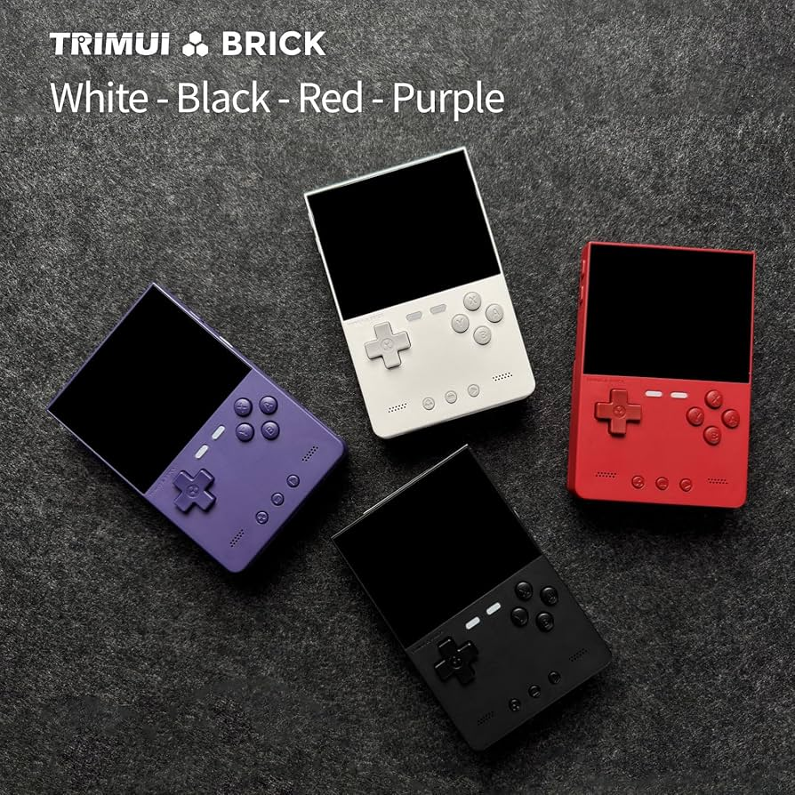

About the Brick
Looking at the specs, you’d be fooled for thinking that the TRIM-UI Brick is just another bog standard retro handheld, attempting to taking your hard earned cash. But take a closer look, and this isn’t necessarily the case. First off I found the build quality of TRIMUI Brick to be really good, and whilst it’s price point may not allow it to be a ‘premium’ handheld, there is no denying that the TRIMUI Brick feels lovely in the hand. Even the TRIMUI Brick is made from ABS plastic, the build quality really is good. It feels solid to hold, unlike many other handhelds of this type, and even when compared to other TRIMUI devices.

The Brick has exactly the same internals as the TRIMU Smart Pro. Both handhelds have the power to play up to PS1 and a small number of N64 and PSP. If you want to play high demanding games, then you may want to look elsewhere, but what the Brick does play, it plays well. The Brick comes with 3,000mAh battery compared to the to the Pro’s 5,000, so you will get around 5hrs on a full charge, compared to the Pro’s 6-7hrs. I think this is just about the right amount of time to play the Brick, and there should be plenty of juice. I’ve found the Brick to be a really nice and capable gaming device, and TRIM-UI have done a great job with it. The stock firmware isn’t great, but there will be plenty of CFW options to choose from over time.
Specs
- CPU – Allwinner A133P, 1.8GHz
- GPU – Imagination PowerVR GE8300, 660MHz
- RAM – 1GB LPDDR3
- Storage – 8GB eMMC, TF card up to 1TB
- Display – 3.2″, 4:3, 1024×768 IPS
- Wireless – Wi-Fi b/g/n, Bluetooth 2.1+EDR/4.2
- Audio – Front-firing stereo speakers, 3.5mm headphone jack, mono mic
- Battery – 3000mAh – Approximately 5-6 hours of life
- Ports – USB-C (charging, data, USB host), TF card slot
- Additional – Vibration motor, RGB lighting, FN keys
- OS – TrimUI Stock Linux OS, MinUI available
- Dimensions – 73.2 x 109.9 x 19.9/11.79 mm
- Weight – 159g